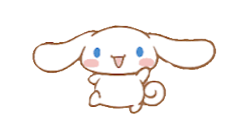
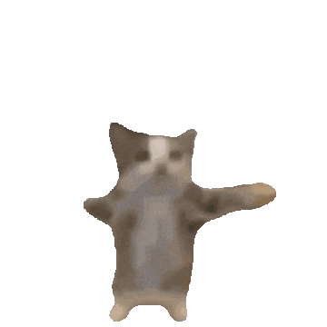

Una pequeña página hecha para ti, Agus.
Hice esta página porque hay cosas que a veces no me salen bien por chat. Se me enredan las palabras, o las digo en el momento equivocado, o simplemente no las digo. Así que preferí tomarme un tiempo, ordenar lo que siento y dártelo así, con calma, sin apuro y sin pantallas de por medio a las 2 de la mañana.
A veces te extraño incluso cuando hablamos.
A veces me gana la inseguridad.
Me importas más de lo que sé explicar.
Hay días en los que simplemente quiero sentirte cerca.
Para mí la confianza y la sinceridad son importantes.
Aunque nos separen tantos kilómetros, sigues siendo mi lugar favorito.
Cuando vi lo de la skin de Roblox haciendo match con la de otra persona, me sentí raro. No porque quiera controlar lo que haces o con quién hablas, sino porque me habría gustado enterarme por ti. Creo que lo que realmente me dolió fue sentir que había algo que yo no sabía.
Eso se sumó a otros momentos: respuestas que llegaban tarde, días con poca iniciativa para hablar o compartir tiempo, ratos en que sentí que había distancia entre nosotros — y no hablo solo de la que ya nos separa por el mapa.
No te cuento esto para reclamarte nada. Te lo cuento porque prefiero decírtelo con calma a guardármelo hasta que pese demasiado.
Poder contarnos las cosas sin miedo a cómo reaccionará el otro.
Hablar de lo bueno y de lo incómodo, antes de que se acumule.
Decir lo que sentimos de verdad, aunque no sea lo más cómodo.
Que los dos pongamos algo de nuestra parte, no solo uno.
Esta sección está pensada para ir creciendo. Por ahora son espacios en blanco, pero de a poco los voy a llenar con nosotros.

Tócalo. A ver qué dice.
Te quiero.
No hice esta página para reclamarte nada ni para hacerte sentir mal. La hice porque, incluso estando confundido o dolido a veces, sigues siendo alguien muy importante para mí.
Hay cosas que me gustaría que mejoráramos entre nosotros: hablar más, compartir más, tener más confianza, y sentir que los dos estamos poniendo algo de nuestra parte — más todavía con la distancia de por medio.
No quiero una relación perfecta. Quiero una donde podamos decirnos las cosas, entendernos y elegirnos con sinceridad, aunque sea desde países distintos.
— Simón
Para Agustina 🌻
Con cariño, Simón.
🫃 +🔫